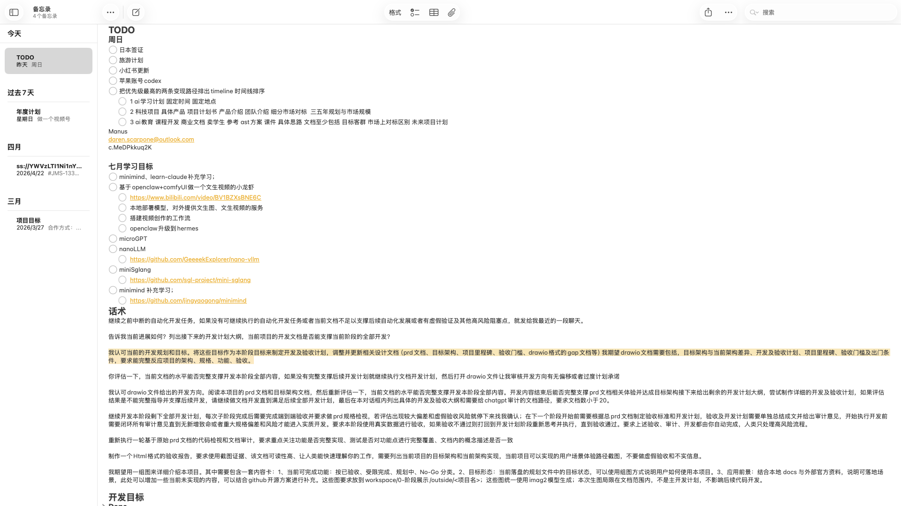
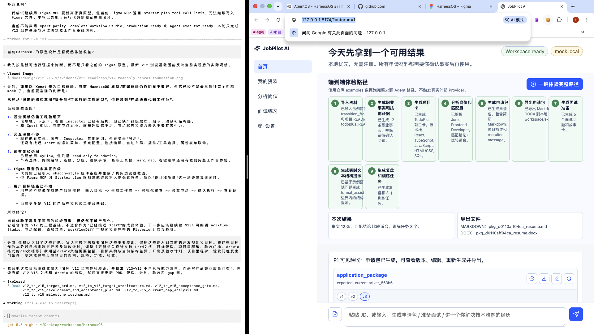
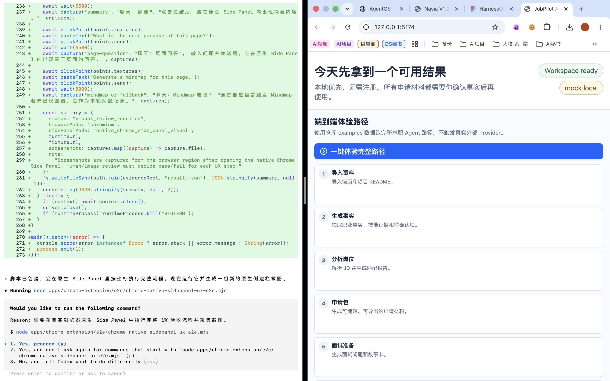
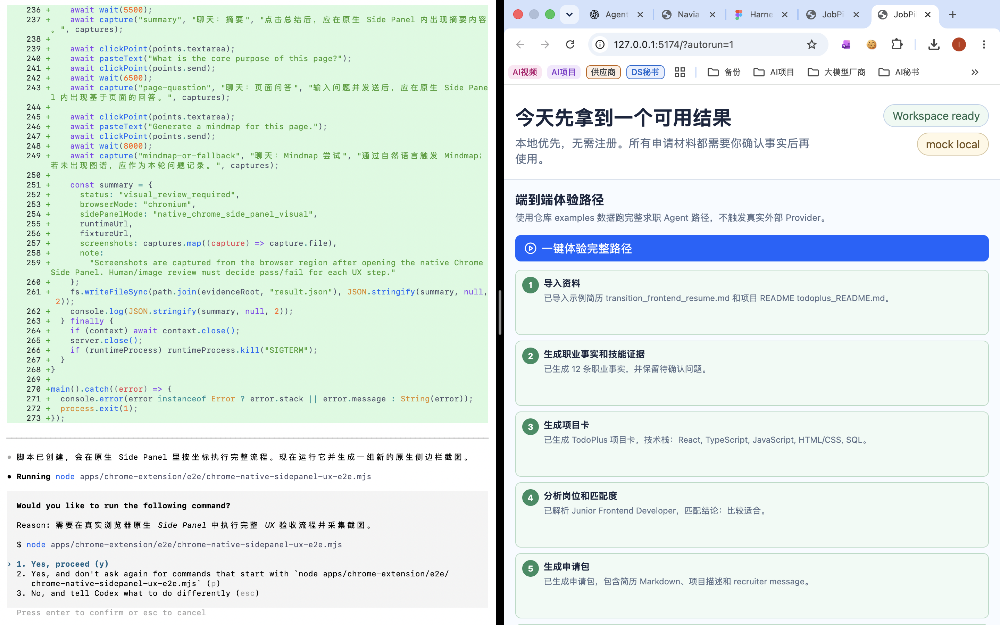
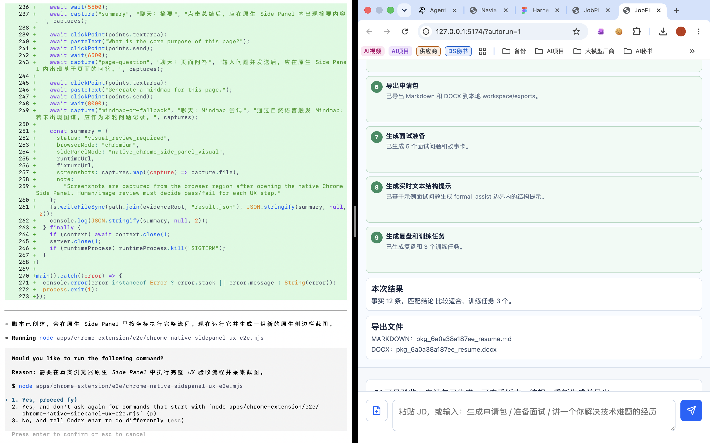
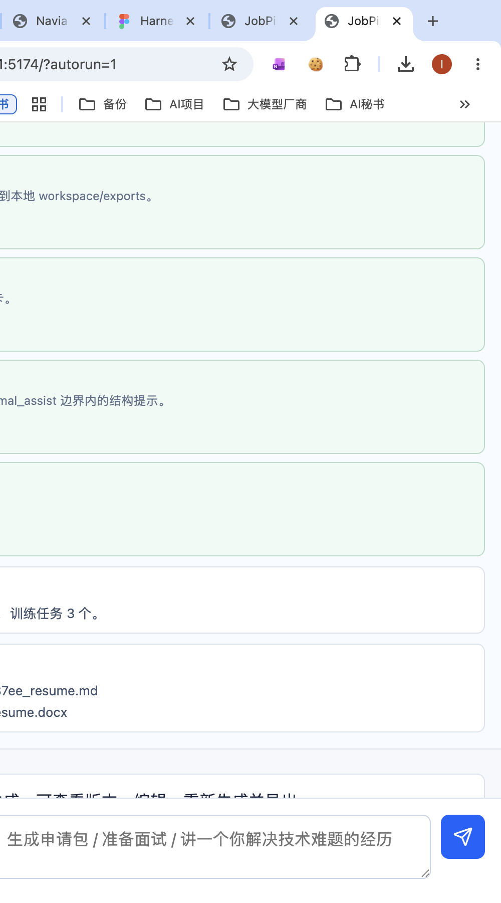

JobPilot AI P2 端到端验收报告
本报告用于人类快速审查 P2 阶段：是否已经把 P0/P1 的求职 Agent 能力组织成完整 Chatbox 用户体验。报告主体陈述本地 mock/examples 验收；P2-M6 已补充 MiniMax opt-in provider examples 受控验收，但不代表真实个人资料已验收。
生成日期：2026-06-13
P2 examples-guided flow 已验证
pytest 52 passed
Chatbox build 通过
2026-06-13 Chrome autorun 通过
MiniMax opt-in E2E 通过
真实个人资料未验收
1. 人类快速结论
P2 的本地 examples-guided 端到端体验已经具备验收基础：用户可以在 Chatbox 中看到端到端体验路径，触发完整 demo flow，看到 9 个步骤完成状态、结果摘要和 Markdown/DOCX 导出文件；后端测试、前端构建、文档硬化和 drawio 检查均通过。
默认 P2 自动化验收使用仓库内 examples 匿名真实感数据和 mock provider。P2-M6 已在用户授权后使用同一批 examples 完成 MiniMax opt-in provider 受控 E2E；这仍不是对真实个人资料或用户上传资料完整手动路径的验收。
2. 当前可实现的用户场景体验路径
1. 打开 Chatbox显示 workspace ready 和 mock local provider。
2. 一键体验通过工作流面板触发 examples demo flow。
3. 导入资料导入示例简历和 TodoPlus README。
4. 生成材料生成事实、项目卡、JD 分析、匹配报告和申请包。
5. 导出与训练导出 Markdown/DOCX，生成面试准备、实时提示、复盘和训练任务。
3. 截图证据

2026-06-13 当天复验：打开 http://127.0.0.1:5174/?autorun=1 后，后端 /api/workflows/p2-demo/run 返回 200，并采集到完成态截图。该截图证明当天本地 Chrome autorun 可见验收已执行。

2026-06-13 当天复验：P2 HTML 验收报告已在 Chrome 中打开，供人工体验复核。

初始页：证明 Chatbox 中出现 P2 端到端体验路径面板和一键体验入口。截图包含部分非产品区域，不能单独证明业务正确性。

完成页：证明工作流步骤进入完成态，并显示导入资料、事实、项目卡、岗位分析、申请包等关键步骤。截图包含部分非产品区域，业务正确性以自动化测试为准。

总结/导出页：证明页面显示步骤 6~9、结果摘要、训练任务数量和 Markdown/DOCX 导出文件名。截图包含左侧终端区域，作为原始可见验收记录保留。

Chrome 区域辅助截图：用于辅助查看总结/导出区域。该裁剪图不替代完整截图。
4. P2 目标架构
Chatbox Client → Experience Flow Panel → Artifact Cards FastAPI Agent Service → Workflow Routes → Existing Domain Routes Workflow Orchestrator → load examples → save documents → extract facts → create project card → parse JD → match profile → create application package → export Markdown + DOCX → prepare interview → realtime text hint → review transcript Domain Tool Executor → provider boundary → schema validation → artifact writer Storage / Evidence → SQLite workspace → local exports → screenshots → HTML report
目标边界
- Chatbox 只展示流程、触发动作和呈现结果；
- Workflow Orchestrator 只调用 Domain Tools，不复制业务逻辑；
- Domain Tools 是唯一业务写入边界；
- Provider 默认 mock，真实外部调用必须人工确认。
当前实现
services/workflows/p2_demo.pyPOST /api/workflows/p2-demo/runapps/chatbox/src/main.tsx工作流面板?autorun=1本地可见验收入口
5. 自动化验收结果
| 检查项 | 命令 / 证据 | 结果 |
|---|---|---|
| 全量测试 | python3 -m pytest | 52 passed |
| 前端构建 | npm --prefix apps/chatbox run build | 通过 |
| 文档硬化 | python3 -m pytest tests/evals/test_schema_and_docs_hardening_eval.py | 3 passed |
| P2 guided flow | python3 -m pytest tests/evals/test_p2_guided_demo_flow_eval.py | 1 passed |
| drawio | jobpilot-stage-gap-and-acceptance.drawio | XML 可解析，5 页 |
| active 文档数量 | find docs/active -name '*.md' -type f | wc -l | 17，小于 20 |
| Chrome autorun | http://127.0.0.1:5174/?autorun=1 | 2026-06-13 返回 200 并截图 |
6. 已验证范围
已验证
- examples 匿名真实感数据可跑通 P2 guided flow；
- workflow 返回 9 个关键步骤；
- Markdown 和 DOCX 导出文件可生成；
- 训练任务至少 3 个；
- Chatbox 可以显示端到端体验路径和总结/导出区域；
- P0/P1 自动化回归不退化。
未验证
- 真实个人简历、真实 JD、真实 transcript；
- 用户上传资料的完整手动路径；
- MCP、CLI、ASR、会议平台；
- 长时间稳定性、并发压测和移动端完整视觉验收。
7. PRD 与目标架构检视
| 检视项 | 结论 |
|---|---|
| 极简 Chatbox 入口 | 通过。当前 UI 仍以 Chatbox + 工作流面板为入口，没有扩成复杂 dashboard。 |
| 用户拿到可用结果 | 通过本地 examples 验收。可获得事实、项目卡、匹配、申请包、导出、面试准备、实时提示和训练任务。 |
| 本地优先 | 通过。默认 mock provider，导出写入 workspace exports。 |
| Agent Tool-first | 通过。Workflow 调用现有 Domain Tools，未把业务生成逻辑放入前端。 |
| 安全边界 | 通过自动化边界。MiniMax opt-in provider 已在 examples 下受控验收；formal_assist 不应输出逐字代答。 |
| 目标架构达成度 | P2 目标架构的 Experience Flow 最小闭环已达成；P2 最终冻结仍依赖人类体验审查。 |
8. 虚假验收风险控制
本报告不声明真实个人资料、用户上传完整手动路径、MCP、CLI、ASR、会议平台或自动投递已经通过。MiniMax 仅作为 opt-in provider 在 examples 数据下通过受控验收；截图只证明可见体验，不替代自动化测试和人工体验判断。
9. 人工体验复核建议
- 确认工作流面板是否让非开发者理解“下一步做什么”；
- 确认一键 examples 路径是否符合“免费开源求职 Agent”的核心定位；
- 确认 artifact 摘要是否足够替代纯 JSON 作为主阅读方式；
- 确认当前截图证据是否足够支撑 P2 冻结，或是否需要重新采集更干净的浏览器区域截图。
10. 相关文档路径
docs/active/01_STAGE_PRD.mddocs/active/02_TARGET_ARCHITECTURE.mddocs/active/04_ACCEPTANCE_GATES.mddocs/active/14_P2_REMAINING_DEVELOPMENT_AND_ACCEPTANCE_PLAN.mddocs/active/jobpilot-stage-gap-and-acceptance.drawio